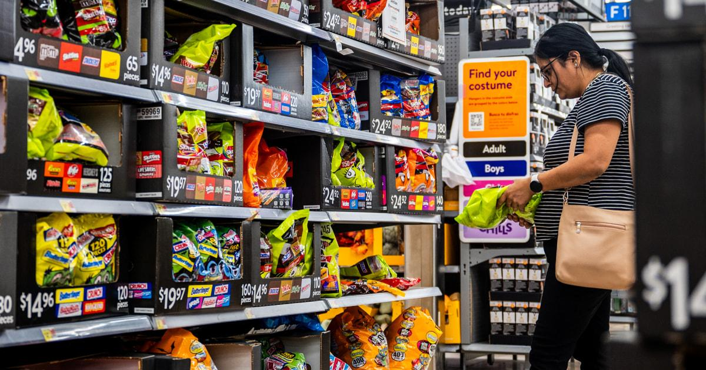
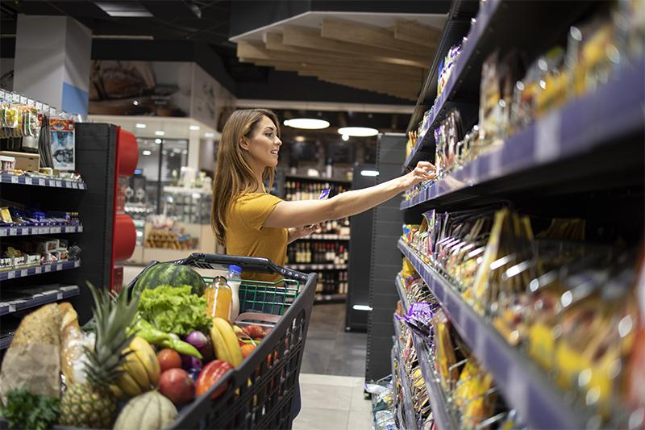
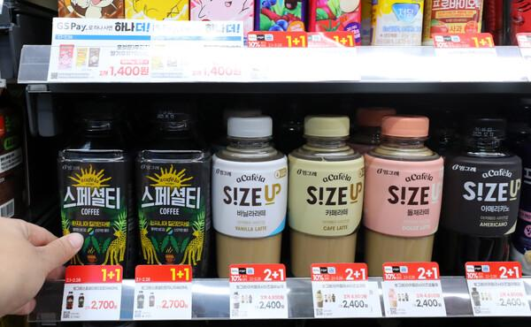
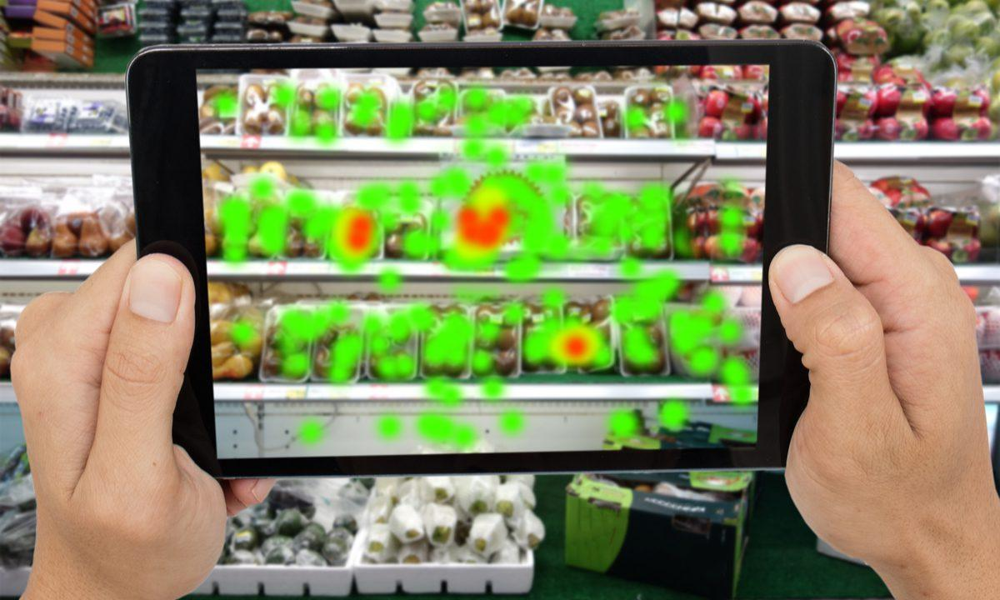
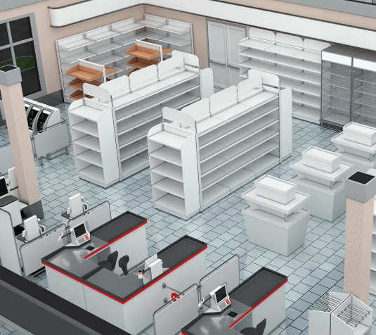

A Place That Sells Attention, Not Products물건이 아니라 '시선'을 파는 곳
The offline store. You put products on shelves and customers buy them. It is the oldest, most obvious space in all of commerce. And yet lately this familiar space is turning into a pretty fierce data battleground.오프라인 매장. 물건을 진열하고 고객이 사 가는, 상업에서 가장 오래되고 뻔한 공간이다. 그런데 이 익숙한 공간이 요즘은 꽤 치열한 '데이터 싸움터'로 변해가고 있다.
Now as ever, the most powerful spot in a store sits at the shopper's eye level, the so called golden zone. The offline space is where people's psychology and subconscious show up surprisingly nakedly, and if you can read their gaze there and turn it into data, that quickly becomes serious money.예나 지금이나 매장에서 가장 힘 있는 자리는 소비자의 눈높이, 이른바 '골든 존(eye level)'이다. 사람의 심리와 무의식이 의외로 적나라하게 드러나는 게 이 오프라인 공간이고, 여기서 시선을 읽어 데이터로 바꿀 수 있다면 그건 곧 상당한 '돈'이 될 수 있다.


The truth is, the fight brands wage to get 'picked' just one more time on that shelf is pretty brutal. It goes way beyond simply making a good product. They keep redesigning packaging to grab a glance, and they pour money into slotting fees and promotions to land a slightly better spot. Plastering the space with digital signage is the baseline. They build field activation plans to lift channel sales, and they design and even settle complicated vendor incentives so frontline sales staff sell one more unit. Anyone who has actually run a store on the ground knows it. They know just how many wild things brands will try in order to survive on this narrow shelf.사실 이 매대 위에서 한 번이라도 더 '간택' 받으려고 브랜드들이 벌이는 싸움은 제법 치열하다. 단순히 물건을 잘 만드는 차원이 아니다. 눈길 한 번 끌어보겠다고 패키징을 수시로 바꾸고, 더 좋은 자리 하나 얻겠다고 입점비에 프로모션 비용을 태운다. 디지털 사이니지로 공간을 도배하는 건 기본이고, 채널 판매를 끌어올리려 필드 활성화 전략을 짜고, 현장 세일즈 스탭이 한 개라도 더 팔게 하려고 복잡한 벤더 인센티브를 설계하고 정산까지 해준다. 현장에서 매장을 굴려본 사람은 안다. 이 좁은 매대에서 살아남으려고 브랜드들이 얼마나 별의별 걸 다 하는지 말이다.

And here a weapon shows up, one that could really shake things up. What if, right here on the shelf, you could know exactly which product a shopper's eyes land on first, in what order their gaze moves, and how long they stare at a particular item?여기서 판을 흔들 만한 무기가 하나 보인다. 만약 이 매대 위에서 소비자가 '어떤 물건에 먼저 눈이 가고, 어떤 순서로 시선을 옮기며, 특정 제품을 얼마나 오래 쳐다보는지'를 정확히 알 수 있다면 어떨까.
This is eye tracking and behavioral data that goes past the POS record of 'what got sold' and tells you 'why their eyes went there.' For a brand it is information worth paying big money for. Get hold of it and you can fine tune everything from package design and shelf VMD all the way to that messy incentive targeting.'무엇이 팔렸다'는 포스기 결제 데이터를 넘어, '왜 그것에 눈이 갔는지'를 알려주는 아이트래킹·행동 분석 데이터. 브랜드 입장에선 큰돈을 줘서라도 갖고 싶은 정보일 것이다. 이걸 쥐면 패키지 디자인, 매대 VMD부터 그 복잡한 인센티브 타겟팅까지 꽤 정교하게 다듬을 수 있을 테니까.

So a question naturally comes up. Will brands gather this gold mine of consumer behavior data themselves, or will the retailers who hold the space be the ones to collect it?그럼 자연스럽게 질문이 하나 생긴다. 이 노다지 같은 '소비자 행동 데이터'를 브랜드가 직접 모으게 될까, 아니면 공간을 쥔 리테일러가 모으게 될까.
Brands will obviously try, but doing it themselves takes serious money for development, installation, and upkeep. On top of that there is no guarantee the store owner will even allow it. So the upper hand probably sits with the retailers who hold the space and the infrastructure.브랜드도 당연히 시도는 하겠지만, 직접 하려면 개발, 설치, 관리에 만만찮은 비용이 든다. 게다가 매장 주인이 그걸 허락해준다는 보장도 없다. 그러니 아무래도 칼자루는 공간과 인프라를 쥔 리테일러 쪽에 있지 않을까 싶다.

So retailers are slowly stepping away from the traditional business of just renting out shelf space and selling goods. Carriers already sell their store ad spots and prime locations as rentals, and beyond BOTM (brand of the month), which maximizes a given brand's exposure in a given month, they run monetization in areas brands can never own, like sales volume and store by store sales records. Soon they will likely wire vision sensors and eye tracking tech all over the store and start collecting where customers stop and what they look at. And you could even picture a data platform that processes all of this and resells it, at a premium, to thirsty brands.그래서 리테일러들은 진열장 빌려주고 물건이나 파는 전통적인 장사에서 조금씩 벗어나는 모습이다. 통신사는 이미 매장의 광고 스팟이나 가장 목이 좋은 곳은 임대로 판매하고 있고, 특정월에 특정 브랜드의 노출을 극대화시켜주는 BOTM (brand of the month)뿐만 아니라 브랜드의 판매량 및 매장별 판매정보 등 브랜드가 갖지 못하는 영역에서의 monetization을 진행하고 있다. 이제 곧 매장 곳곳에 비전 센서와 아이트래킹 기술을 깔고, 고객이 어디서 멈추고 어딜 보는지 모으는 쪽으로 가는 것 같다. 그리고 이 데이터를 가공해 목마른 브랜드들에게 다시 비싸게 되파는 '데이터 플랫폼'도 생각해 볼 수 있지 않을까 싶다.
Data everyone wants but not everyone can get. Maybe this becomes the retailer's new revenue model (BM). Looking at where tech is heading these days, the picture of the offline store becoming a giant data collector and selling 'insight' to brands feels closer than you would think.누구나 갖고 싶지만 아무나 가질 수 없는 데이터. 어쩌면 이게 리테일러의 새로운 수익 모델(BM)이 될 수도 있겠다 싶다. 요즘 테크 흐름을 보면, 오프라인 매장이 거대한 데이터 수집기가 되어 브랜드들에게 '인사이트'를 파는 그림이, 생각보다 코앞에 와 있는 것도 같다.